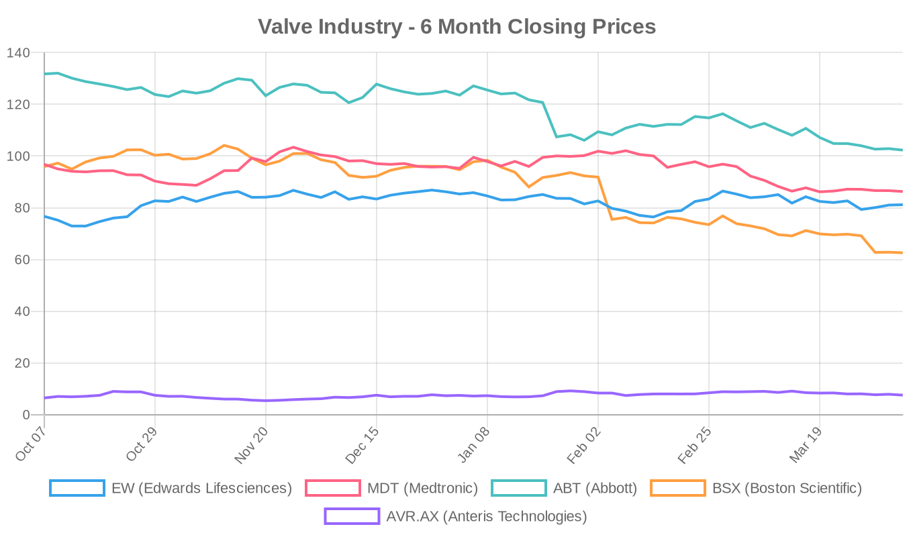
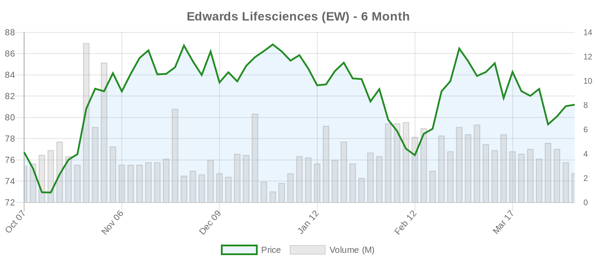
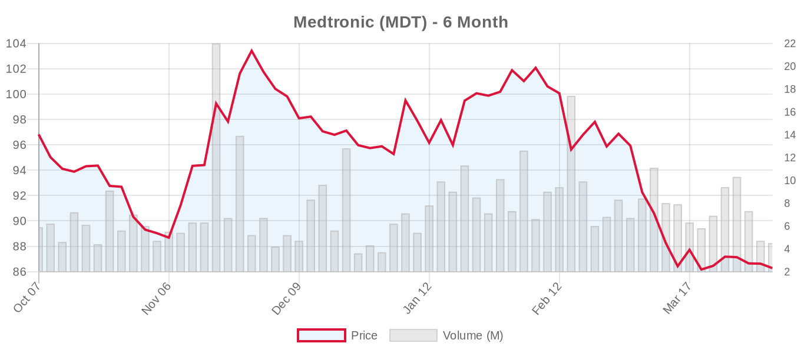
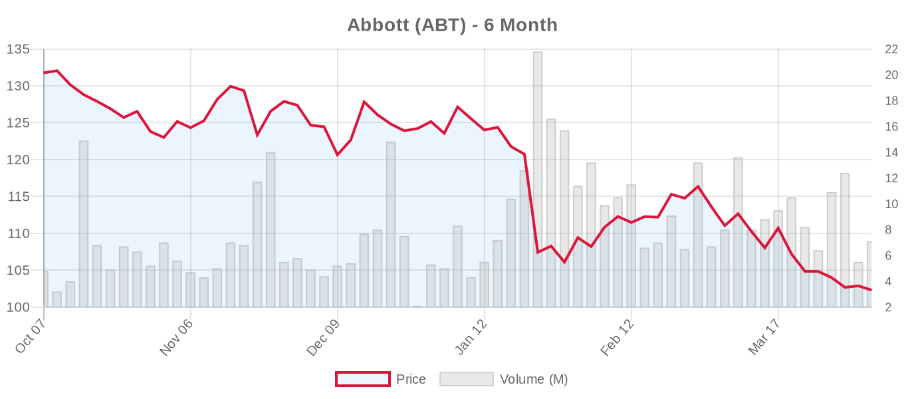
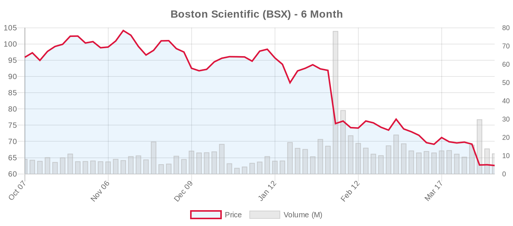
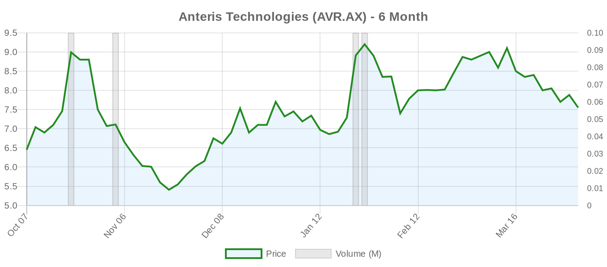

|
||||||||
|
April 07, 2026 By E. Nolan Beckett |
||||||||
|
||||||||
Executive SummaryThe tricuspid valve space is heating up: TriCares has won FDA IDE approval to begin a U.S. study of its Topaz transcatheter tricuspid valve replacement system, while VDyne has received FDA clearance to launch a pivotal trial for its competing tricuspid replacement device — two milestones in a single week that underscore the accelerating race in transcatheter tricuspid therapy. Meanwhile, new research suggests that a simple nutritional score may predict outcomes after TAVR as well as the complex risk calculators surgeons currently rely on, and a study highlights the significant impact of frailty on outcomes after MitraClip procedures. Earnings season approaches, with Edwards Lifesciences and Boston Scientific both reporting April 22. For the clinical audience: today's digest is dominated by the tricuspid replacement pipeline, where two companies are now positioning for pivotal U.S. data in a space that had zero guideline-level transcatheter recommendations as recently as 2020. The ESC 2025 guidelines gave transcatheter TR treatment a Class IIa recommendation based on TRILUMINATE, Tri.Fr, and TRISCEND II — but those data are largely for edge-to-edge repair, not replacement. Whether TTVR devices like Topaz and VDyne can demonstrate superiority over TEER remains an open and commercially consequential question. On the TAVR front, two converging publications on the Geriatric Nutritional Risk Index (GNRI) make a compelling case for nutritional assessment as a complement to — or simplification of — traditional risk scores. And an intriguing valve-in-valve-in-valve case report reminds us that the lifetime management challenge of transcatheter valves is no longer theoretical. Today's Key Findings
Aortic Valve (TAVR/TAVI)Nutritional Status: A Simpler Path to TAVR Risk Stratification?Two publications today converge on the same message: the Geriatric Nutritional Risk Index (GNRI) — calculable from just five variables (age, height, weight, sex, serum albumin) — may be as good as the EuroSCORE II (21 variables) or STS-PROM (69 variables) at predicting post-TAVR mortality. Boehm et al. analyzed 3,470 consecutive TAVR patients at a single center over 13 years and found no statistical difference in AUC between GNRI and either established score for 30-day mortality (0.72 vs. 0.69 vs. 0.72). Patients in the major GNRI risk group had a hazard ratio of 4.6 for overall mortality. Separately, Liu et al. published a meta-analysis of 13 cohort studies (9,647 patients) confirming that low pre-procedural GNRI was associated with a 90% increase in all-cause mortality after TAVR (HR 1.90, 95% CI: 1.60–2.26). Editorial note: These findings are clinically intuitive — malnutrition is a well-established marker of frailty — but carry important caveats. The Boehm study is single-center and retrospective, and AUC values in the 0.69–0.72 range represent only moderate discriminative ability for all three scores. The meta-analysis pools heterogeneous studies with variable GNRI cutoffs and follow-up durations. Still, the simplicity of GNRI is appealing. Rather than replacing EuroSCORE II or STS-PROM, GNRI may be most valuable as a complementary flag for nutritional optimization before TAVR — an area where prehabilitation protocols remain inconsistent. The ESC 2025 guidelines emphasize frailty assessment but do not specify nutritional indices; future updates may need to formalize this. Diastolic Dysfunction: Multi-Omics Reveals Metabolic RootsPanaou et al. performed untargeted lipidomics (1,110 lipids) and proteomics (834 proteins) on plasma from 231 TAVI patients, finding that 39% had severe diastolic dysfunction. Multi-omic network analysis identified two molecular clusters: one characterized by disrupted mitochondrial membrane phospholipids (cardiolipins) linked to cytoskeletal remodeling, and another featuring elevated acylcarnitines indicative of metabolic dysfunction and inflammation. Patients with severe diastolic dysfunction had more AF, higher NT-proBNP, more HF hospitalizations, and higher mortality. Editorial note: This is basic science work, but clinically relevant. Diastolic dysfunction remains a major determinant of persistent symptoms and HF hospitalization after TAVR — the "expected benefit didn't materialize" population. If metabolic biomarkers can identify patients unlikely to improve hemodynamically after valve replacement, they could inform the intervention-vs-watchful-waiting decision in asymptomatic severe AS, where the ESC 2025 guidelines now support early intervention (Class IIa) but the ideal patient phenotype remains debated. Urinary Biomarker for AKI Prediction After TAVIObata et al. evaluated urinary liver-type fatty acid-binding protein (L-FABP) measured via point-of-care testing in 186 TAVI patients at a single center. AKI occurred in 12.9% of patients. Preoperative urinary L-FABP showed the best predictive performance (AUC 0.74) and independently predicted AKI after adjustment for ejection fraction and renal dysfunction. This is the first study to apply POCT-based L-FABP measurement in the TAVI setting. Editorial note: AKI remains an underappreciated complication of TAVR, particularly in patients with CKD who are increasingly being treated. The single-center design and modest sample size limit generalizability, and the AUC of 0.74 suggests room for improvement. However, a point-of-care biomarker that could stratify AKI risk preoperatively has practical appeal for periprocedural management — contrast minimization, hydration protocols, and ICU planning. Valve-in-Valve-in-Valve: The Lifetime Management Challenge Made RealEmini et al. report a case of a patient with early failure of two balloon-expandable transcatheter valves who was successfully treated with a third prosthesis — a self-expanding supra-annular valve — in a valve-in-valve-in-valve (ViViV) configuration. The platform switch from balloon-expandable to self-expanding corrected severe transvalvular regurgitation while preserving adequate effective orifice area. Editorial note: This case, while anecdotal, is a harbinger. As the ESC 2025 guidelines acknowledge, lifetime management planning at the index TAVR procedure is paramount — particularly for patients with life expectancy exceeding assumed valve durability. The ESC explicitly recommends CT-based anatomical analysis to assess future valve-in-valve feasibility, coronary obstruction risk, and sinus sequestration. THV explantation carries 12–17% mortality. This case underscores the importance of commissural alignment and platform selection at the first implant. The recently updated REdo TAVI trial (NCT06557798), now recruiting 550 patients in Leeds comparing redo-TAVI, surgical explant, and conservative management, will provide much-needed prospective data on this growing challenge. Digital Rehabilitation for TAVR PatientsJia et al. published a qualitative longitudinal study examining rehabilitation needs and adherence among TAVR patients and caregivers during digital home-based cardiac rehabilitation. Full abstract not available, but the study addresses the growing recognition that post-TAVR recovery extends well beyond the catheterization lab, particularly in elderly patients where frailty and deconditioning are prevalent. CKM Syndrome and TAVI OutcomesNi et al. published a letter in the European Journal of Heart Failure regarding the prevalence and influence of cardiovascular-kidney-metabolic (CKM) syndrome on outcomes after TAVI. While the letter's specific arguments are not available in abstract form, this intersects with the ESC 2025 guidelines' emphasis on comorbidity burden as a driver of post-TAVR outcomes, particularly in the context of futility assessment. Mitral Valve (MitraClip, PASCAL, TMVR)Frailty and Mitral TEER: Patient Selection MattersJain et al. published a propensity-score matched analysis in Catheterization and Cardiovascular Interventions examining the impact of frailty on outcomes following mitral transcatheter edge-to-edge repair. While the full abstract is not available, this study speaks to a critical tension in the field: TEER for secondary MR has been upgraded to Class I in the ESC 2025 guidelines (based on COAPT 5-year follow-up and RESHAPE-HF2), but the COAPT criteria explicitly exclude patients with advanced HF — a population that overlaps substantially with the frail. Editorial note: The enthusiasm for TEER must be tempered by rigorous patient selection. The COAPT trial's benefit was observed in patients with LVEF 20–50%, LVESD ≤70 mm, and at least one HF hospitalization — but also required patients to tolerate optimization of guideline-directed medical therapy. Frailty indices were not part of the formal COAPT criteria, yet frailty likely explains much of the heterogeneity in real-world TEER outcomes. As the ESC 2025 guidelines now recommend TEER as Class I for ventricular SMR, the field needs validated frailty cutoffs to prevent indication creep into populations unlikely to benefit. India: Simultaneous TAVI + TMVRKnocksense reports that Jaipur's Eternal Hospital performed India's first combined TAVI and TMVR procedure. While details are limited, simultaneous multi-valve transcatheter intervention represents a niche but growing frontier — one that challenges heart teams to weigh cumulative procedural risk, contrast load, and vascular access planning against the alternative of staged procedures or surgical correction of both valves. Tricuspid Valve (TriClip, TTVR)[NOTABLE] TriCares Wins FDA IDE for Topaz Tricuspid ReplacementMassDevice reports that TriCares has received FDA Investigational Device Exemption (IDE) approval to begin a U.S. clinical trial of its Topaz transcatheter tricuspid valve replacement system. This adds another competitor to a tricuspid replacement landscape that already includes Edwards' Evoque (TRISCEND II, now actively not recruiting with 864 enrolled) and VDyne's system (VISTA-US, now recruiting). [NOTABLE] VDyne Clears FDA for Pivotal Tricuspid Replacement TrialMedTech Dive reports that VDyne has secured FDA clearance to begin its pivotal VISTA-US trial (NCT05848284) evaluating the VDyne Transcatheter Tricuspid Valve Replacement System in 30 patients with symptomatic severe TR. The trial is now actively recruiting. Editorial note: The tricuspid replacement space is evolving rapidly, but perspective is needed. The ESC 2025 Class IIa recommendation for transcatheter TR treatment was based primarily on TEER data (TRILUMINATE, Tri.Fr) rather than replacement. TRISCEND II showed superior symptom/QoL improvement for Evoque replacement but flagged higher bleeding and pacemaker rates. Replacement devices face unique challenges in the tricuspid position: the thin-walled right ventricle, variable annular geometry, proximity to conduction tissue, and hepatic venous drainage. Both VDyne (30-patient early feasibility) and TriCares (IDE approval, trial design TBD) are in early stages. The field should resist premature enthusiasm until randomized data against TEER emerge — the "right device for the right patient" question in TR is far from settled. Device & TechnologyNon-Fluoroscopic ASD Closure: Radiation-Free Structural InterventionChang et al. published the protocol for PANASD, a prospective, multicenter, randomized controlled trial enrolling 660 patients across eight Chinese centers comparing percutaneous and non-fluoroscopic (echocardiography-guided) ASD closure against conventional fluoroscopy-guided procedures. While not directly a valve therapy, this RCT tests a principle — radiation-free structural heart intervention — that has implications for TAVR, TEER, and TTVR procedures where cumulative radiation exposure to operators and patients is increasingly scrutinized. Results expected by late 2026. Industry & MarketEdwards Lifesciences: Insider Sale and Analyst MomentumEdwards Lifesciences CVP Daniel Lippis sold 1,019 shares ($82,522) under a pre-arranged 10b5-1 trading plan. The sale is routine and modest relative to institutional positions, but coincides with growing analyst attention to Edwards' tricuspid pipeline. GuruFocus reports that an analyst maintained coverage on EW with an unchanged target, while SimplyWallSt published a valuation analysis examining Edwards' positioning after EVOQUE TRISCEND II results and growing regulatory momentum in the tricuspid space. UPMC Cardiologist LawsuitPennLive reports that UPMC fired a cardiologist who allegedly reported racist texts and a CEO's conflict of interest. While not directly a structural heart story, UPMC is a major cardiac surgery and transcatheter valve center; institutional governance issues at high-volume heart programs merit attention. Financial AnalysisThis week's tricuspid pipeline developments — TriCares' IDE approval and VDyne's pivotal trial clearance — frame the competitive dynamics heading into earnings season. Edwards Lifesciences, which reports Q1 earnings on April 22, holds the most advanced position in transcatheter tricuspid replacement through EVOQUE (TRISCEND II: 864 patients enrolled, actively not recruiting). But the rapid emergence of TriCares and VDyne as funded competitors introduces long-term market share uncertainty in what was previously a two-horse race between Edwards (replacement) and Abbott (TriClip repair). The tricuspid addressable market is estimated at $2–5B annually, but actual penetration remains early-stage, dependent on operator adoption and reimbursement frameworks that lag behind the ESC 2025 Class IIa recommendation. Edwards trades at $81.19 with a forward P/E of 24.5 — a premium to Medtronic (14.2) and Abbott (16.8) that reflects the market's belief in Edwards' transcatheter growth runway. However, the 27-analyst consensus target of $96.93 implies 19% upside, suggesting Wall Street views the current price as a reasonable entry point. The insider sale by CVP Lippis ($82K under a 10b5-1 plan) is immaterial. Abbott ($102.30) and Boston Scientific ($62.59) have experienced significant 6-month declines of 22% and 35% respectively, likely reflecting broader medtech headwinds including tariff concerns and macroeconomic uncertainty rather than structural heart-specific issues. Both report in mid-to-late April. Abbott's TriClip post-approval study in Japan (now recruiting 250 patients) signals ongoing geographic expansion, but the key commercial question — whether tricuspid TEER reimbursement will scale — depends on payer response to the TRILUMINATE and Tri.Fr data that underpinned the ESC upgrade. Valve Industry Stocks Edwards Lifesciences (EW)
Medtronic (MDT)
Abbott (ABT)
Boston Scientific (BSX)
Anteris Technologies (AVR.AX)
Private Companies: JenaValve Technology (Trilogy system, ALIGN-AR LVAD Registry recruiting), J Valve Technology, and Meril Life Sciences (Myval platform, featured in the LANDMARK trial) remain private with no public stock data available. JenaValve's ALIGN-AR registry (NCT06594705, 50 patients) represents the most advanced transcatheter pure AR program — a space where the ESC 2025 guidelines now provide a Class IIb recommendation for inoperable patients. Market Outlook: The medtech sector enters a critical two-week earnings window with Abbott (April 16), Edwards and Boston Scientific (both April 22), and Medtronic (May 20). All four major valve companies trade well below analyst consensus targets, suggesting either significant upside potential or downward target revisions ahead. The fundamental story — expanding transcatheter indications, ESC 2025 guideline upgrades for TEER and tricuspid therapies, and the TAVI age threshold shift — supports long-term structural heart growth. But near-term headwinds (tariff uncertainty, healthcare spending caution, rate sensitivity) have compressed multiples. Watch for forward guidance on TAVR procedure volumes, EVOQUE launch metrics, and any commentary on the impact of the ESC 2025 guideline changes on European adoption rates. Clinical Trial UpdatesAortic Valve
Mitral Repair (TEER)
Mitral Replacement (TMVR)
Tricuspid Repair
Tricuspid Replacement
Other Relevant Trials
Social & Conference HighlightsNo major conference presentations or notable social media discussions identified today. The next major structural heart meeting to watch is EuroPCR (May 2026), where updated data from several trials highlighted above may be presented. Looking Ahead: All eyes turn to earnings season — Abbott reports April 16, followed by Edwards Lifesciences and Boston Scientific on April 22. With all three trading near 52-week lows and structural heart volumes presumably robust, forward guidance will be the key differentiator. On the clinical front, the twin FDA clearances for tricuspid replacement trials (TriCares IDE + VDyne pivotal) signal that the regulatory pathway for TTVR is maturing, but the field awaits head-to-head data against TEER to determine which patients benefit most from repair vs. replacement. The ESC 2025 guidelines opened the door; the trials now need to walk through it. — E. Nolan Beckett | The Valve Wire |
||||||||
|
|
||||||||
|
||||||||
|